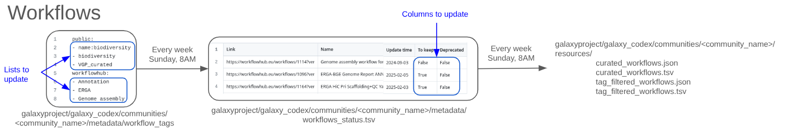

Creation of resources listing Galaxy workflow for your community
| Author(s) |
|
| Reviewers |
|
OverviewQuestions:
Objectives:
Is it possible to have an overview of all Galaxy workflows for a specific scientific domain?
Create a community reviewed table for Galaxy workflows within a specific scientific domain
Embed the workflow table in a community page
Time estimation: 1 hourLevel: Introductory IntroductorySupporting Materials:
Published: Sep 17, 2025Last modification: Nov 27, 2025License: Tutorial Content is licensed under Creative Commons Attribution 4.0 International License. The GTN Framework is licensed under MITpurl PURL: https://gxy.io/GTN:T00559version Revision: 3
Similarly to the numerous tools available on Galaxy, numerous workflow are available on public Galaxy instances and in Workflow Hub. This tutorail will take you through the steps to generate resources listing the relevant workflows and how to display them on your community codex page.
The pipeline creates a table with all the workflows associated to selected tags. This table can be filtered to only include workflows that are relevant to a specific research community.
The generated community-specific table can be used as it and/or embedded, e.g. into the respective Galaxy Hub page or Galaxy subdomain.
The pipeline is fully automated and executed on a weekly basis. Any research community can apply the pipeline to create a table specific to their community.
The aim of this tutorial is to create a workflow table for a community.
AgendaIn this tutorial, we will cover:
Add your community to the Galaxy CoDex
You first need to check if your Community is in the Galaxy CoDex, a central resource for Galaxy communities. If the community is already there, you can move to the next step of this tutorial.
If you community is not already included, follow this step :
Hands On: Add your community to the Galaxy CoDexYou need to create a new folder in the data/community folder within Galaxy CoDex code source.
- If not already done, fork the Galaxy Codex repository
- Go to the
communitiesfolder- Click on Add file in the drop-down menu at the top
- Select Create a new file
- Fill in the
Name of your filefield with: name of your community +/metadata/workflow_tagsThis will create a folder for your community, a new folder for your community called metadata and a file called workflow_tags.- Click on Commit changes
- Fill in the commit message with something like
Add X community- Click on
Create a new branch for this commit and start a pull request- Create the pull request by following the instructions
Pull list of tags relevant to your community
To add workflows in your community workflow table, you will need to indicate a list of tags relevant to your community, and workflows associated with these tags will be automatically pulled from public Galaxy instances and Workflow Hub. Only workflows with the selected tags will be added to the table. You will then be able to remove workflows that are not relevant to your community or deprecated.
Hands On: Select workflows tags from the Galaxy instances
- Go to your favorite public Galaxy instance.
- Go to the
Workflowsection- Select
Public workflows(for example: Public workflows on the French instance)- Browse for workflows that are relevant to your community
- Note the tags that are associated with workflows of interest
Hands On: Select workflows tags from the Workflow Hub
- Go to Workflow Hub
- Browse for workflows that are relevant to your community
- Note the tags that are associated with workflows of interest (in the
tagsection on the left of the workflow page)
Add the list relevant tags for your community in the workflow_tags file
Hands On: Add the relevant tags to the workflow_tags file
- Open or create a file named
workflow_tagsin your comunity metadata folder (communities/<your community>/metadata/workflow_tags)Add the name of the tags relevant to your community in the
workflow_tagsfile you started above. The file is split in two sections :Public, which should inidcate the tags used on public Galaxy instances; andworkflowhub, which indicates the tags to use to select workflow on Workflow Hub.For example:
public: - name:microgalaxy - microgalaxy workflowhub: - abromics - amr - amplicon
It is currently mandatory to have tags under both sections (public and workflowhub) or the codex script will crash and you will not get the files mentionned below. Once you have a list of the tags that you wish to keep, you can submit this to Galaxy CoDex.
Hands On: Submit the new list of tags to Galaxy Codex
- Click on Commit changes at the top
- Fill in the commit message with something like
Add workflows tags for my community- Click on
Create a new branch for this commit and start a pull request- Create the pull request by following the instructions
The Pull Request will be reviewed. Make sure to respond to any feedback.
On the sunday following merging of the pull request, a few files will be created :
communities/<your community>/metadata/workflow_status.tsv: A table with all the workflows extracted with the tags mentionned above.communities/<your community>/resources/curated_workflows.tsv: A table with the same workflows as in the metadata file and additional information.communities/<your community>/resources/curated_workflows.json: A json file with the same info as the correponding table.communities/<your community>/resources/tag_filtered_workflows.tsv: At this stage, the same table ascurated_workflows.tsv.communities/<your community>/resources/tag_filtered_workflows.json: At this stage, the same json ascurated_workflows.json.
Review the generated table to curate workflows
The generated table in the metadata folder (communities/<your community>/metadata/workflow_status.tsv) contains all the workflows associated with the tags that you selected. However, not all of these workflows might be interesting for your community.
Galaxy CoDex allows for an additional optional filter for workflows, that can be defined by the community curator (maybe that is you!).
To filter the workflows, you will update the values in the last two columns of the communities/<your community>/metadata/workflow_status.tsv file
To keepindicating whether the tool should be included in the final table (TRUE/FALSE).Deprecatedindicating whether the tool is deprecated (TRUE/FALSE).
You can modify the file directly in GitHub or download it to create a spreadsheet, easier to edit as a community.
Hands On: Modify workflows using spreadsheets
- Download the
workflow_status.tsvfile incommunities/<your community>/metadata/.- Open
workflow_status.tsvwith a Spreadsheet Software.- Review each line corresponding to a workflow.
- Add
TRUEto theTo keepcolumn if the tool should be kept, andFALSEif not.- Add
TRUEorFALSEalso to theDeprecatedcolumn.- Export the new table as TSV.
- Submit the TSV as
workflow_status.tsvin yourcommunities/<your community>/metadata/folder.- Wait for the Pull Request to be merged
On the sunday following merging of the pull request, the following files, reflecting the Galaxy tool landscape for your community, will be updated :
communities/<your community>/resources/curated_workflows.tsvcommunities/<your community>/resources/curated_workflows.jsoncommunities/<your community>/resources/tag_filtered_workflows.tsvcommunities/<your community>/resources/tag_filtered_workflows.json
You can step-by-step review all workflows in your community and update the workflow_status.tsv file. You could also share this file with your community members and discuss weather the workflow should be kept or not. Collaborative work could be established using google spreadsheet.
Here is an overview of the files (the top three files in the table are the most important):
| Filename | Location | Generation | Function | Format | Example (microgalaxy) |
|---|---|---|---|---|---|
| workflow_tags | communities/ |
Manual | Name of the tags relevant to your community | NA | Example |
| workflow_status.tsv | communities/ |
Automatic (To update manually) | Table with all the workflows extracted with the tags mentioned above | TSV | Example |
| curated_workflows.tsv | communities/ |
Automatic | Table containing only the curated workflows | TSV | Example |
| curated_workflows.json | communities/ |
Automatic | File containing only the curated workflows | JSON | Example |
| tag_filtered_workflows.tsv | communities/ |
Automatic | Table with all the workflows extracted with the tags mentioned above | TSV | Example |
| tag_filtered_workflows.json | communities/ |
Automatic | JSON file with all the workflows extracted with the tags mentioned above | JSON | Example |

Open image in new tabEmbed the table in your community page on the Hub
The table you have created can be embedded in your community page on the Hub, e.g. microGalaxy.
Hands On: Embed your table
- If not already done, fork the repository Galaxy Hub
- Open or create your community page:
content/community/sig/<your community>/index.md- TO DO : We Will soon update this section to explain how to include the table, sorry for the inconvenience.
- Submit the changes
- Wait for the Pull Request to be merged
Conclusion
You now have a table with workflows available for your community, and this table is embedded in a community page.
You've Finished the Tutorial
Key points
The Galaxy Codex extracts all Galaxy workflows to create tables
The community interactive Galaxy workflows table can be embed into any website
Frequently Asked Questions
Have questions about this tutorial? Have a look at the available FAQ pages and support channelsFeedback
Did you use this material as an instructor? Feel free to give us feedback on how it went.
Did you use this material as a learner or student? Click the form below to leave feedback.

Citing this Tutorial
- Bérénice Batut, Paul Zierep, Solenne Correard, Keiler Collier, Creation of resources listing Galaxy workflow for your community (Galaxy Training Materials). https://training.galaxyproject.org/training-material/topics/community/tutorials/community-workflow-table/tutorial.html Online; accessed TODAY
- Hiltemann, Saskia, Rasche, Helena et al., 2023 Galaxy Training: A Powerful Framework for Teaching! PLOS Computational Biology 10.1371/journal.pcbi.1010752
- Batut et al., 2018 Community-Driven Data Analysis Training for Biology Cell Systems 10.1016/j.cels.2018.05.012
Congratulations on successfully completing this tutorial!@misc{community-community-workflow-table, author = "Bérénice Batut and Paul Zierep and Solenne Correard and Keiler Collier", title = "Creation of resources listing Galaxy workflow for your community (Galaxy Training Materials)", year = "", month = "", day = "", url = "\url{https://training.galaxyproject.org/training-material/topics/community/tutorials/community-workflow-table/tutorial.html}", note = "[Online; accessed TODAY]" } @article{Hiltemann_2023, doi = {10.1371/journal.pcbi.1010752}, url = {https://doi.org/10.1371%2Fjournal.pcbi.1010752}, year = 2023, month = {jan}, publisher = {Public Library of Science ({PLoS})}, volume = {19}, number = {1}, pages = {e1010752}, author = {Saskia Hiltemann and Helena Rasche and Simon Gladman and Hans-Rudolf Hotz and Delphine Larivi{\`{e}}re and Daniel Blankenberg and Pratik D. Jagtap and Thomas Wollmann and Anthony Bretaudeau and Nadia Gou{\'{e}} and Timothy J. Griffin and Coline Royaux and Yvan Le Bras and Subina Mehta and Anna Syme and Frederik Coppens and Bert Droesbeke and Nicola Soranzo and Wendi Bacon and Fotis Psomopoulos and Crist{\'{o}}bal Gallardo-Alba and John Davis and Melanie Christine Föll and Matthias Fahrner and Maria A. Doyle and Beatriz Serrano-Solano and Anne Claire Fouilloux and Peter van Heusden and Wolfgang Maier and Dave Clements and Florian Heyl and Björn Grüning and B{\'{e}}r{\'{e}}nice Batut and}, editor = {Francis Ouellette}, title = {Galaxy Training: A powerful framework for teaching!}, journal = {PLoS Comput Biol} }
You can use Ephemeris's
shed-tools installcommand to install the tools used in this tutorial.shed-tools install [-g GALAXY] [-a API_KEY] -t <(curl https://training.galaxyproject.org/training-material/api/topics/community/tutorials/community-workflow-table/tutorial.json | jq .admin_install_yaml -r)Alternatively you can copy and paste the following YAML
--- install_tool_dependencies: true install_repository_dependencies: true install_resolver_dependencies: true tools: []